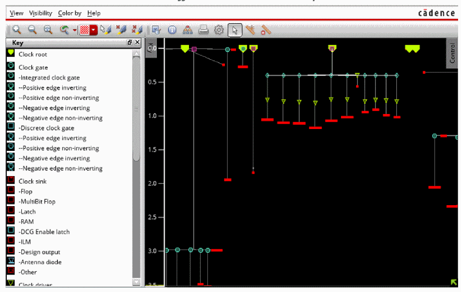
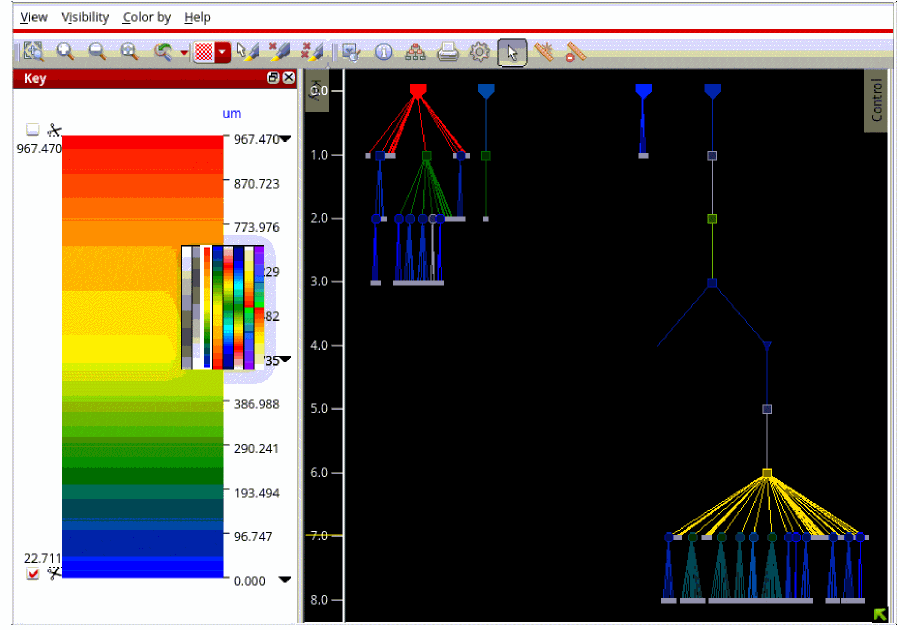
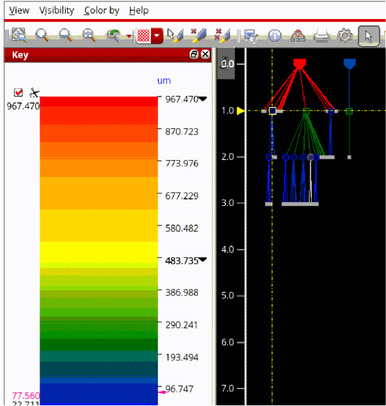
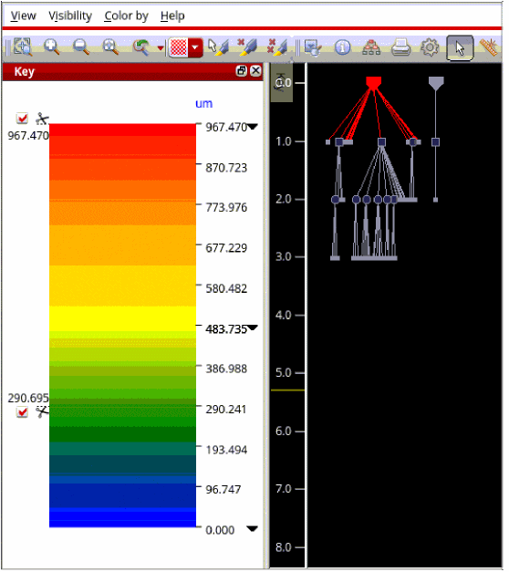
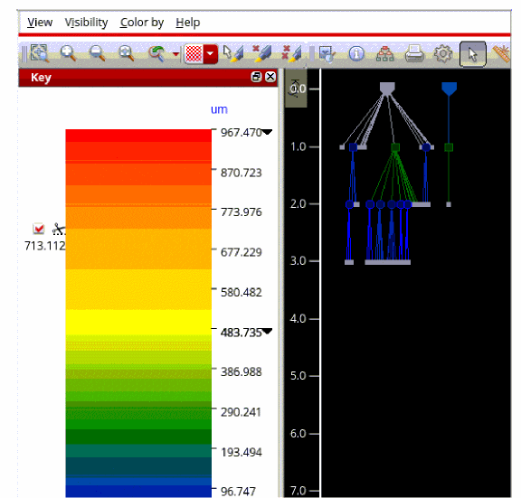
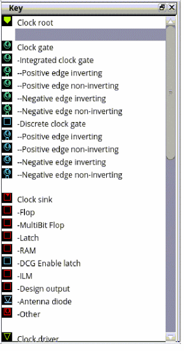

Key Panel of CTD
When enumeration or subset coloring is in effect, the Clock Tree Debugger displays a key panel that lists the enumeration categories or subsets along with their corresponding colors. If the Key panel is visible, it updates automatically to reflect the currently selected coloring.
Many enumeration categories are named after database object names, for example, skew groups, and may therefore be lengthy. To avoid introducing a horizontal scroll bar, long names are truncated in the key panel.

The window has a minimum width but can be resized by dragging it horizontally. When a continuous color scale is in effect, a vertical scale appears on the right side of the visualization. This scale shows the colors in use and provides controls to adjust the scale bounds and to filter objects by value using the scissors. You can right-click the scale to switch between coloring schemes such as grayscale, rainbow, or heat map.

Unlike the enumeration key, which can contain arbitrary text labels, the color-scale key has a fixed, narrow width. The width defines the minimum width of the window. When a color scale is present, a check box is added to the View menu that allows you to show or hide the scale.
Note: Only one enumeration can be displayed at a time. As a result, the key and color-scale panel are mutually exclusive and share the same window.
When coloring by a continuous color scale, the values for selected objects are highlighted in red on the scale shown in the Key panel. If a large number of objects are selected, the number of distinct values displayed is limited to reduce clutter and excessive redraw time.

You can use scissors to redraw the CTD display. The upper scissor represents the maximum value of the attribute, and the lower scissor represents the minimum value. As you move the scissors along the color scale, the clock objects with attribute values outside the specified range are hidden. This behavior is illustrated in the images below.


Key Panel for Cell Type Option
For enumeration of Cell Type options, the key panel shows a set of symbols with colors and graphic shapes. This is shown in the image below.

Return to top